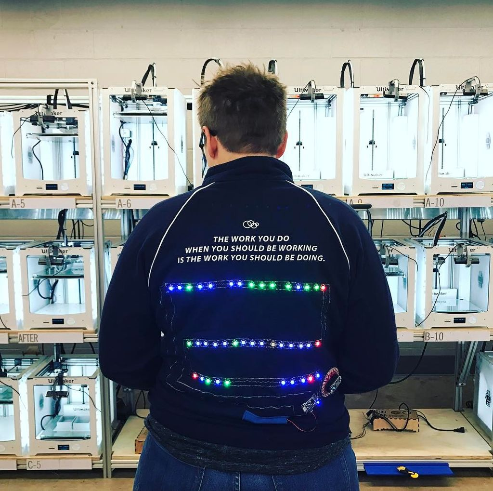
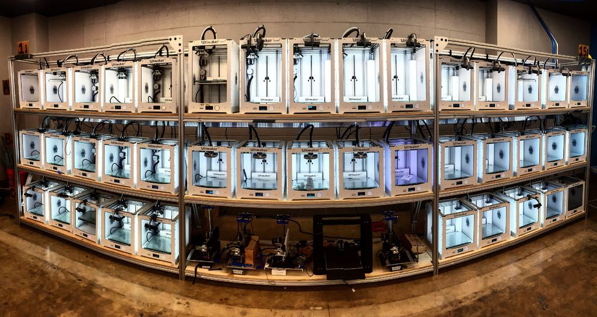
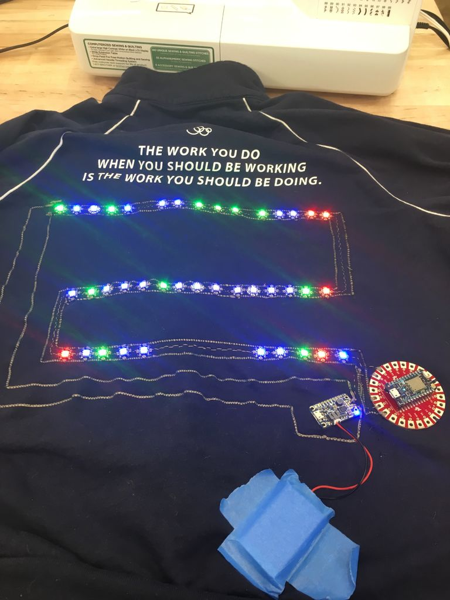
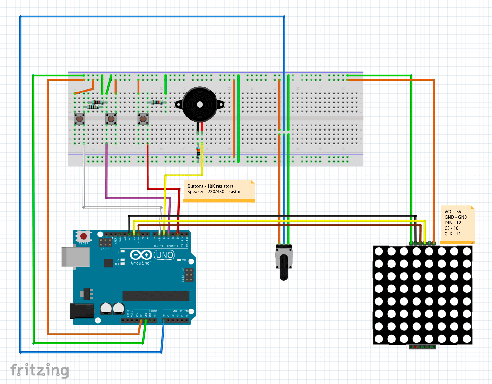
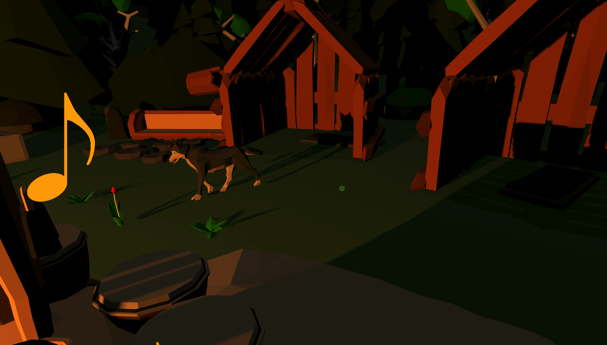
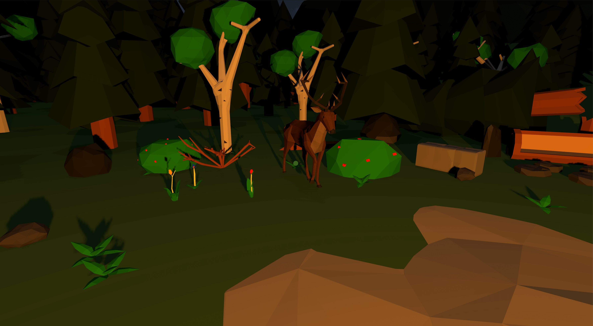
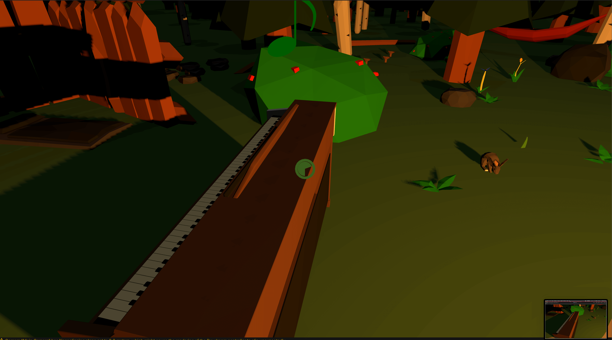
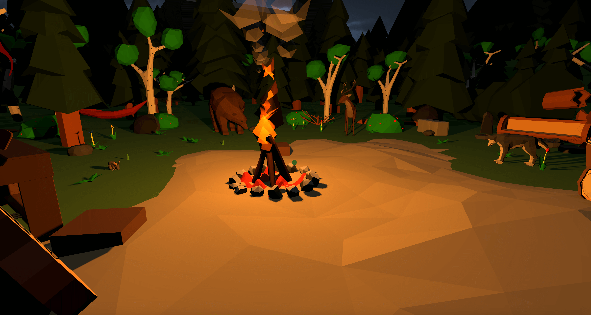

Research
Coming into this challenge, I did not really have an idea where to even start the research, as I had trouble envisioning anything that could be translated into a nice challenge. However, after some googling, I found some interesting projects.
Arm flamethrowers
This epic project was made by Allen Pan. The background is bringing the firebenders from Avatar: The last Airbender into reality and create flamethrowers that are activated by punches.
I find this project really badass and entertaining. I can imagine that the flamethrowers must feel very empowering :D. This project is more for entertainment and fun purposes, rather than actual useful functionalities, but nevertheless, I really liked how seamlessly and effectively it works and how great it looks.
Hand washing timer
After the previous fun project, I decided to look into more useful projects, even if they would not be wearables. I found this cool hand washing timer, which during the coronavirus pandemic is very useful and helpful.
The timer was made by Lucas and Gautam from Google Creative Lab. It is fairly easy to assemble, and shows a timer of 20 seconds using Arduino, distance sensor and a servo motor. I really like that with such a project, you can very easily help mainly kids remember how important it is to wash your hands properly, and that this also shows that using Arduino, it is possible to creatively address and help with any current issues (such as now the corona crisis).
3D printer status jacket
This project was made by Sally Kingston, or sallyhall - and is published on instructables circuits. It is a cool jacket with 40 LEDs that show the status of 40 3D printers in Duke’s Innovation Co-Lab Studio.
The LEDs are either red - when printer is offline, green - when printer is available or blue - when printer is printing. The status is being retrieved in real time wirelessly to the jacket. I think this project connects the cool part with useful - it can be used to monitor the status and immediately know when a printer is done printing without having to constantly check on it. I find it impressive that such a simple and small idea can be effectively implemented to simplify 3d printing work, while creating an interesting attraction in the process - if I was a customer in a 3D print shop, I would be pleasantly surprised and impressed.
 Tinkering
Connecting proximity sensor and LED matrix
I was first just curious about whether I would be able to get the matrix work with the distance sensor. I set up four rings as patterns for the matrix, and using the distance sensor, I tinkered with them based on how far my hand was.
Using buttons
I then used a similar set up, but I wanted to try out buttons. I hooked up two buttons to the breadboard, connected them to arduino, and gave each one of them a different ring to show when they are pressed.I sometimes encountered problems with the buttons, when they were loosely connected - they either did not respond, or responded without me pressing them.
Buttons with speaker
I really liked the possibilities of buttons, so I wanted to tinker with them more. Next up, I connected a piezo speaker to the Arduino, and gave it a tone to play. I thought of an idea of using different buttons for different tones in my challenge, and creating a wearable music instrument, but in the end I went into a different direction.
Tinkering with tones
As I said, I decided to do something different for my challenge, but I still wanted to explore tinkering with the speaker and buttons a bit more. I connected the distance sensor again, and used it to map out different tones based on the distance. The only problem is, that it is nearly impossible to create some pleasant music this way :D
Design and Build
Snake
First, I found this project of Snake and tried to implement it to my concept - I wanted to make a wearable Snake game. I changed the code quite significantly - changed it from using a joystick to two buttons - left/right, and made the snake advance automatically, I also at first eliminated game over, and set up that moving beyond the matrix will make the snake come out from the other side.
Next, aside from entertainment, I wanted to make something useful, especially in times of the corona crisis. I decided to accompany the snake game with a hand washing timer - using the LED matrix and a piezo buzzer. I also connected a potentiometer for selecting a functionality - snake or hand washing timer. I then used this LED matrix editor to create the numbers for the countdown and icons for the menu and countdown finish. Here you can see a diagram of how I set up the whole circuit:
I then programmed the countdown and found a tune for the Starwars Cantina song implemented that on the countdown finish, and programmed the menu. My aim here was to coin entertainment and usefulness in unison. Furthermore, I didnt want to make another hand-worn wearable, so I went with the silly concept of SnakePants, where the whole circuit rests in one leg of pants.
I think the concept I created answers the challenge topic well - it is quite silly, but innovative - pants embedded with an interface that lets the user play one of the all-time classic games, while giving them a useful functionality of a countdown for washing hands. It shows that you don't have to follow the traditional route of wearables - putting it on your arm - and as an experiment works quite well.
Short video explaining the circuit
Showcase
SNAKEPANTS
Reflect
AR/VR in general and my vision of AR/VR in the future
I remember when I first heard about the Oculus Rift, how excited I was about the possibility of being IN the game world. I always wanted to try it out and even own a tech wonder such as a VR headset, as I found the concept really exciting. I think that particularily with music and auditory inputs, VR can offer a really nice and immersive experience. Additionally, I think horror games and stories in VR have a larger impact, so taking all of these into consideration, I believe that with VR, it is possible to achieve a higher emotional reaction and immersion than in any other way.
On the other hand, I think VR technologies have a future mainly in the gaming world, as they are very intense and might not be suitable in more serious contexts. I hope that in the future, VR will include not only visuals and auditory input, but also touch, smell and even taste. Finally (and hopefully), if it advances to a degree of super-realism, it could even replace things like ZOOs, circuses and similar, effectively eliminating problems (such as animal cruelty) bound to these, while retaining the entertainment.
My final product
Honestly, I am very satisfied with how my final product turned out. It does exactly what I envisioned and set out to create. I experienced hours of frustrations trying to figure out minor details of the scripts, and finding the right words to google when searching for answers to my development questions. I really enjoyed working with the low poly models, as they exactly mirrored the vibe I was going for. With the lighting and the right music (which also took way too much time to find and fit :D ), I feel like I made a cozy and relaxing experience, so I am happy about that. If I was to improve some aspects, it would probably be the animations and further interactions with the animals, but in the limited time that I had, I am quite proud of the result.
My experience using this technology
I was really surprised about how easy developing for VR could be. Of course it required building on foundations such as the Google Cardboard SDK - which heavily simplified creating the basic set up of raycaster pointer and head-mounted display, but still, it is not that different from developing for a desktop computer. One tricky thing is the limited control and inputs, which basically come down to looking at something, taking the sight off of it and looking at it for a little longer to trigger a "click" - with such a small sample of functional interactions, as a developer, you must really think of a simple way to develop your vision, which I found to be a very fun challenge. It really makes you re-think how a technology is used, as you cannot take controls for granted.
